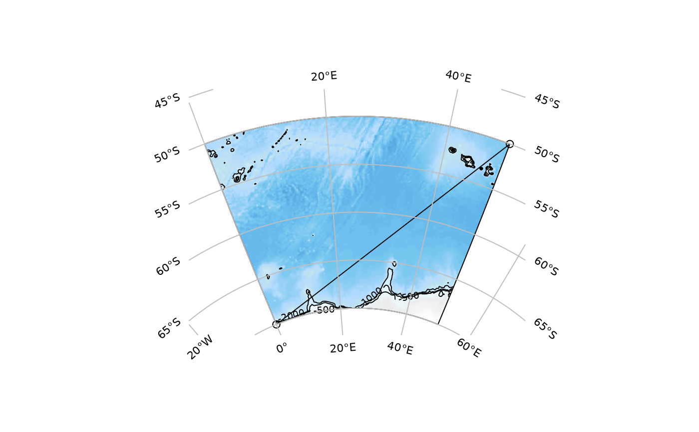
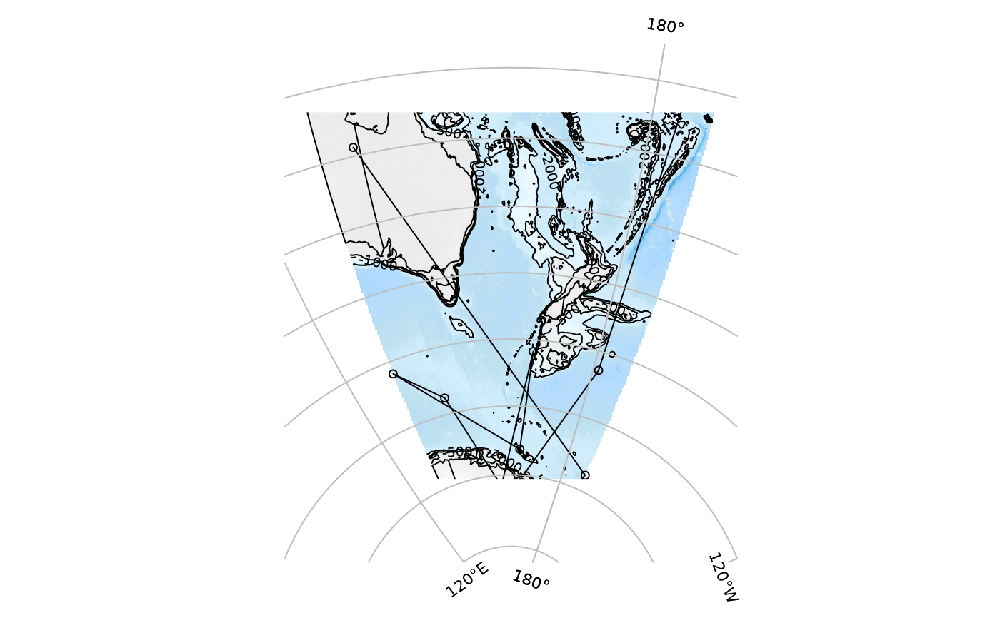
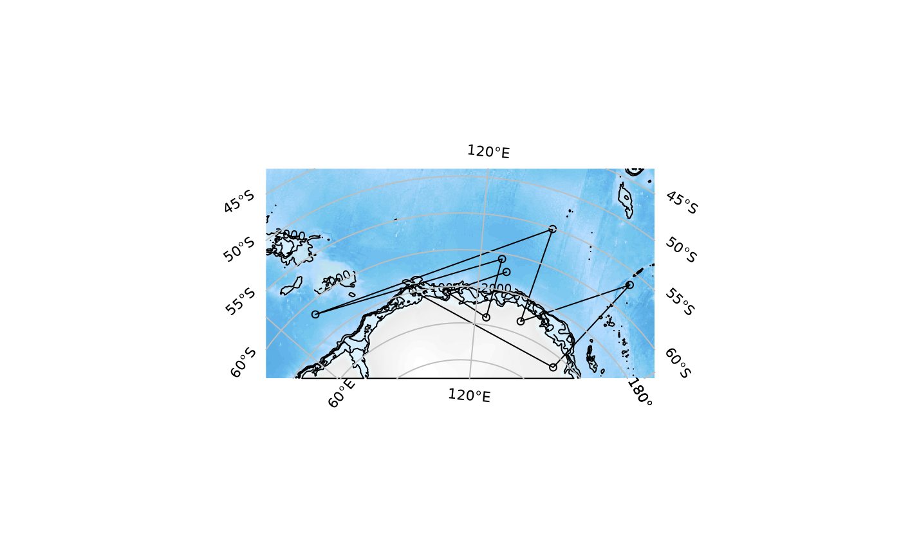
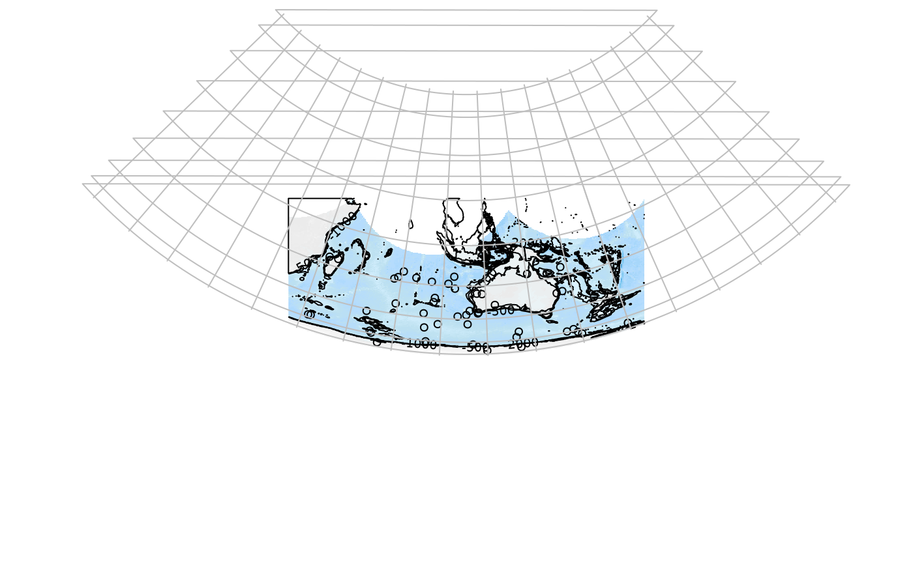

Provide minimal input information to get a default map. The simplest case is to run the function without any inputs at all and it will provide a random default.
SOauto_map(xs, ys, centre_lon = NULL, centre_lat = NULL, family = "stere", expand = TRUE, dimXY = c(300, 300), bathy = TRUE, coast = TRUE, input_points = TRUE, input_lines = TRUE, graticule = TRUE, buffer = 0.05, contours = TRUE, levels = c(-500, -1000, -2000), trim_background = TRUE, mask = TRUE)
| xs | optional input data longitudes |
|---|---|
| ys | optional input data latitudes |
| centre_lon | optional centre longitude (of the map projection, also used to for plot range if `expand = TRUE`) |
| centre_lat | as per `centre_lon` |
| family | optional projection family (default is `stere`ographic) |
| expand | re-compute range of plot to incorporate centre_lon and centre_lat with the data as a natural middle |
| dimXY | dimensions of background bathmetry (if used) default is 300x300 |
| bathy | optional bathymetry data to use (or `FALSE` for no bathmetry image) |
| coast | optional coastline data to use (or `FALSE` for no coastline) |
| input_points | add points to plot (of xs, ys) |
| input_lines | add lines to plot (of xs, ys) |
| graticule | flag to add a basic graticule |
| buffer | fraction to expand plot range from that calculated (either from data, or from centre_lon/centre_lat _and_ data if `expand = TRUE`) |
| contours | add contours |
| levels | contour levels if `contours = TRUE` |
| trim_background | crop the resulting bathymetry to its margin of valid values |
| mask | logical, used to mask the raster to the graticule |
the derived target extent and the map projection used, bathymetry, and coastline data
To input your data, use input locations as `xs` (longitude) and `ys` (latitude) values, there must be at least two locations.
Try families such as 'lcc', 'laea', 'gnom', 'merc', 'aea' if feeling adventurous.
SOauto_map(c(0, 50), c(-70, -50))SOauto_map(runif(10, 130, 200), runif(10, -80, -10))#> Error in st_cast_sfc_default(x): list item(s) not of class sfgSOauto_map(runif(10, 130, 200), runif(10, -85, -60))#> Error in st_cast_sfc_default(x): list item(s) not of class sfg## save the result to explore later! protomap <- SOauto_map(runif(10, 60, 160), runif(10, -73, -50))SOauto_map(runif(50, 40, 180), runif(50, -73, -10), family = "aea", centre_lat = -15, input_lines = FALSE)#> Warning: 6042 projected point(s) not finite#> Error in as(sf::st_union(sf::st_intersection(sf::st_as_sf(coastline), sf::st_as_sf(gratmask))), "Spatial"): no method or default for coercing “sfc_GEOMETRYCOLLECTION” to “Spatial”